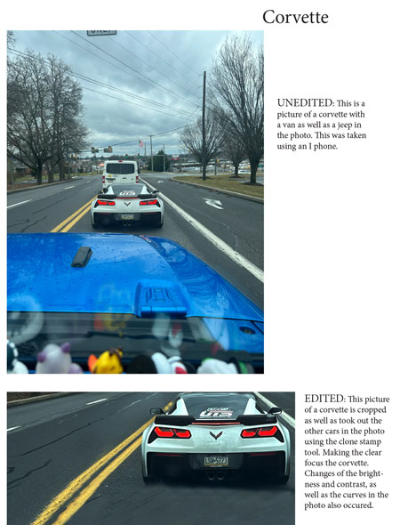

Cameron Caputos Ditgital Photo |
||
|  |
This page is dedicated to my photo portfolio, showcasing a blend of photography and digital editing techniques. My highlight project features a flower with some flaws that I enhanced using Photoshop to add dimension and depth.
Here is what went into creating this piece: |
|
| © 2024 Cameron Caputo | ||